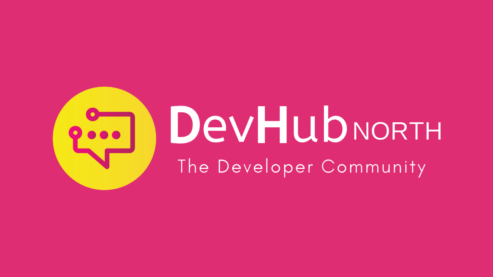

DevHub North - October 2023
Blazor a trail with .NET 8 - Peter Bull
What is .NET?
.NET is the free, open-source, cross platform framework from Microsoft for building modern apps and services. .NET allows developers to build apps and services for Windows, macOS, Linux and Docker along with native apps for mobile or desktop with a single codebase for Windows, macOS, iOS and Android plus build cloud-native apps that run on all major cloud provides such as Microsoft Azure and AWS or create independently deployable microservices that run on Docker. .NET has been independently verified as being faster than any other popular framework and performance has been improved in every recent release of .NET. .NET allows developers to not only build for platforms such as Windows, macOS and Linux but also build on those platforms by taking advantage of Visual Studio, the most comprehensive IDE for .NET developer on Windows or Visual Studio Code the standalone code editor for Windows, macOS and Linux. To learn more about .NET to build, test and deploy your own apps or find preview versions of .NET by visiting dot.net.
What's new in .NET 8?
.NET now has a new release every November with odd numbered releases supported for eighteen months as Standard Term Support or STS, and even numbered releases supported for three years as Long-Term Support or LTS. This includes .NET 8 due to be released during .NET Conf 2023 in November, but you can use .NET 8 now as there is a release candidate available along with a “Go Live” licence so can use it in production should you want to! .NET 8 adds new features such when handling JSON when it is output from an application or serialised and when it is input into an application or deserialised, including handling values that are read only or that are not public which would have had to be the case in previous versions of .NET. .NET 8 adds new Validation Attributes aimed at non-user entry data for cloud-native services such as configuration including checking if a value is in a list of allowed ones. .NET 8 also adds a new way to provide services using keys to register and consume services in applications using Dependency Injection where required functionality can be provided to another piece of functionality. .NET 8 also adds a new TimeProvider to enable time abstraction for .NET developers to mock date and time for testing. .NET 8 gets new features each release, that help both advanced and other developers improve their applications with .NET 8. You can start developing with .NET using Visual Studio for Windows, which also has a free Community edition and even optionally subscribe to GitHub Copilot for an AI pair programmer to learn or code faster with, or can develop with .NET on Windows, macOS and Linux using Visual Studio Code and can download both from visualstudio.com.
What is C#?
C# is the open-source programming language for building apps with .NET but can also use F# which is a functional programming language. C# is the most popular language for .NET developers and can target any application type and platform using .NET. C# is easy to learn and read so can understand what's going on and what's going wrong. C# allows developers to be certain about a value with type safety to know if something is a string or an integer. C# does have flexibility with types with generics allowing developers to use the same code with different types and has pattern matching so can have an object and if it is one type or another deal with it as needed. C# supports properties to control access to values of an object such as for serialisation or deserialization and it also has string interpolation allowing for expressions within strings such as values from objects and to format them. C# has async allowing for code that doesn't block other code or code that can run in the background when other code is running and includes LINQ or Language Integrated Query to allow developers to query objects, transform or manipulate data from various sources and be able to write expressive and readable code. C# is an open-source and evolving language with a new version released now with each new release of .NET and is driven by the community including what features to add or not to C#. To get started with C# or even try out some of the language features online then visit csharp.net.
What's new in C#?
C# 12 will be released during .NET Conf 2023 with .NET 8 but can use C# now with the release candidate of .NET 8. C# 12 introduces primary constructors which are used to initialise a class or object with a set of values or other objects by supporting simpler declaration of values to be passed in and used within a class. C# also add collection expressions where values can be set to common collection values and adds support for using alias that allows for types to be referenced more easily with any type not just named types. C# 12 also will support default values for parameters in lambda expressions which are anonymous functions that allow an expression to be defined. C# gets new features with new releases of .NET which can include experimental features to give developers the chance to try something new. To learn more about .NET 8 and C# 12 then you can check out the online conference .NET Conf 2023 between the 14th and 16th of November at dotnetconf.net.
What is Blazor?
Blazor allows .NET developers to build beautiful full-stack web apps using .NET and C# without writing any JavaScript. Blazor components can be hosted in any web browser using WebAssembly for client-side experiences, hosted server-side using ASP.NET Core on Windows, macOS and Linux, or in native apps for Windows, macOS, iOS and Android. Blazor components can be created simply and efficiently that are flexible and reusable for the web or for hybrid apps on mobile and desktop. Blazor supports data binding values for visualisation and editing of data along with support for interoperability with JavaScript such as libraries and APIs. To find out more about building web apps using the power of .NET and C# without needed to write any JavaScript then visit blazor.net.
What's new in Blazor?
.NET 8 adds streaming rendering of components allowing content in Blazor from long-running tasks to be delivered from the Server as soon as it is available and direct rending of Blazor components outside of a web app. .NET 8 will introduce a anew mode to Blazor where aren't fixed to client with WebAssembly Mode or server with Server Mode but can have best of both worlds with Auto Mode, allowing developers to have a component download from the server for super-fast delivery while downloading in the background then use WebAssembly Mode when available. Blazor in .NET 8 when using Server Rendering when users navigate to a page or submits a form instead of a full-page refresh is enhanced by intercepting the request then patching the content into the page. .NET 8 with Blazor introduces Sections where the output of content can be specified in a Section Output and then set with SectionContent along with the ability to debug WebAssembly Apps in Firefox using the Firefox Developer Tools. .NET 8 continues to evolve Blazor as a full-stack web user interface framework for creating apps that render content at component or page level supporting multiple rendering modes on the client, server, or both. To find out how to build cross-platform web apps with .NET and C# for Windows, macOS, Linux or Docker using ASP.NET that powers Blazor on Server then visit asp.net.
Overview
NET is the open-source framework that allows developers to build modern web apps and services from Microsoft for Windows, macOS, Linux and Docker along with native apps for Windows, macOS, iOS and Android and has a new release each year with odd numbered releases supported for 18 months and even numbered releases supported for three years, with the latest version .NET 8 coming in November. C# is the modern and open-source language to target any application type and any platform using .NET with the latest version C# 12 coming with .NET 8. Blazor is for building web apps with .NET and C# without having to write any JavaScript and ASP.NET to create other web apps and services. If you're not using .NET, C# or Blazor already then you can start your journey today or if already using .NET, then why not try .NET 8 when it is available in November! You can get the slides and demo at github.com/rogueplanetoid/blazoratrailwithdotneteight or try out Spotazor online at rogueplanetoid.github.io/spotazor.
Agile IT Architecture Design: Building Efficient and Effective Systems for AWS and Beyond - Gary Brown
Introduction
Gary Brown is a Cloud Architect who specialises in AWS Cloud platforms, Java and Spring but they also used to be a technical lead for NHS Pensions. AND Digital are on a mission to close the world's digital skills gap. They are a team of 1,700 digital specialists who work across the country and abroad. They Guide businesses to ensure they have right strategy to move forward, they build to help business to build what they need and equip them with the skills to move on without them and have training. Gary Brown is part of Club Hawking who are architects and platform engineers to deliver platform needs.
What is Architecture?
What happens when there is no architecture, you can get disjointed systems and have lots of different apps in a siloed workforce and can have difficult decision making, consistency can break down due to lack of direction. The bigger the organisation the worst they get but the best ones have an ecosystem that works together and a strategy where they blend and work together. Architecture is design but not all design is architectural - talk about what decisions should be made but not something we should be taking through the process. Is a mechanism to document and communicate with our business and ensure that we are building what we can deliver. Knowns are well established within an organisation, such as programming language etc, but also need to understand known unknowns and understand how to drive things forward and unknowns are things you don't know are there with things such as legislation.
What are Standards?
Programming languages, tooling, code standards, platforms, entities and naming conventions. Interoperability to make sure services can communicate and work with each other, compliance such as GDPR as this protects user data and make us mindful of what can be done with data. Innovation - looking at horizon of new capabilities such as generative AI and looking backwards to make sure keeping things up to date. When creating systems that work together and automation makes sure that solutions that work to same standards are understood. Reduce risks with standards as understand.
Architecture Patterns
Layered Architecture - in codebase create separate layers to handle a single responsibility and each layer communicates with layer below it and there is no jumping layers. With layered architecture is is simple, often a single deployment and don't need much infrastructure and if it does grow it can be harder to work with so then need to move to other architecture types. You could run something in Docker or your favourite management services.
Event Driven Architecture - is broken down into broker and mediator topologies and can be good for performance, elasticity, scalability, decoupling, and reliability. You can break down a system from one large application and create asynchronous messaging based on events and scale them as needed. These services have retry mechanisms and can have a simple example where have an S3 bucket to trigger an event on an SQS Queue and a Lambda will poll this queue for any messages. You can delay processing of a message and then the consumer reads the message and is then successful then it can remove this message. Lambda continues to poll for messages and due to delay it can't read the message, you don't want to read the same message so need some time between getting the message and deleting it and then to remove it so don't get duplicate data, the timeout should be six times longer than the duration of the Lambda. Another example is what happens if a message is read and it fails, when the timeout visibility finishes it can be read again for the lambda. What happens if it continues to fail, there is the idea of a dead letter queue where if it has failed multiple times and will add this to a dead letter queue for about four to fourteen days for the message to then be picked up once the reason behind the failure has been discovered. Once you have worked out an issue, you can then replay those messages as if nothing has happened. Mediator Toplology provides a single point to dispatch messages to the appropriate place based on filters
Serverless - Backend as a Service where you could put the front-end website as a static website and then have this talk via an API gateway and could split apart the functionality via a contract between the front and the back, could have one lambda function for one specific piece of functionality so if need to make a change you are lowering that blast radius. Functions as a Service you could have many devices streaming data and then use this. Serverless gives scale, reduce overhead as no longer worry about infrastructure, discrete functionality, cost effectiveness as you pay for what you use. Increased availability.
Modular Monolith - Remember layered architecture, a modular monolith takes this with the one deployable service and could still be deployed just like layered architecture but handles growth better as everything is split into specific modules within that application.
Microservices - could have an API gateway that abstracts maybe serverless and traditional layered and these can be technically agnostic such as a .NET component, what is important is getting the bounded context correct. If deploying a change for multiple services then you may have the size of them and the bounded context wrong, monitor what is going on with changes and keep an eye on this. Could have three services and may have a team building these services but this adds more complexity to manage as if need to build a feature they will do that in one service, the structure of software mirrors structure of the team, so may build these services in a tightly coupled way. Due to the extra complexity to build larger services needs more people so as a consequence, communication is more difficult, and prioritisation is harder to manage. There is the notion of where structure teams around the services that are to be built, create two teams that can be fed by two pizzas. Teams are responsible for a service so can have less complexity and less communication. Coupling can be a problem for getting that right and if they are too tightly coupled then have to change other services and have to do a larger deployment and a more coordinated deployment but if get service boundary right then you have services that work together with loosely coupled well contracted services. With low cohesion an application has many different elements, if it is a small application this can be fine but larger ones can be hard to maintain much like a monolith. With high cohesion you break them down into each service area and the complexity is reduced and quality and agility improves. There are no ACID transactions between services, this has to be handled yourself, if messages need to go across this needs to be right. Microservices are scalable, you can scale what you need, are flexible and can use different tech and can be resilient and critical systems don't get impacted, can have rapid development where can split work and work on services independently but don't split them too small as it creates more work. Microservices are easier to deployable and to communicate this could be REST or gRPC along with making sure there is low cohesion. If have two services, one dependant on another, so if need to add something to an API but then make it compatible with the current ones and then once a change has been full made then can make additions required. You could wrap functionality around a feature flag until it is available.
How do you make it Agile?
With Waterfall each part goes onto the next stage but beware Ivory Tower Architecture that could take time with big up-front requirements and can be slow to change with no feedback. There is a manifesto for Agile development and agile is about finding the right solution through analysis, design, experiment, and feedback. Through time the window of uncertainty should grow smaller and should be reduced. Test your design and understand it more with proof of concepts and this gives courage to estimate the work when needed. The architecture runway is to guide teams to do the right thing at the right time. Make those data driven decisions and can have the balance of architecture between intentional architecture and emergent design as want to have some design up front such as constraints and platform but the emergent design is how the services are structured and communicate with each other. But if rely too much on emergent design can increase test debt so it is a balance, but have light architectural artifacts, don't want to spend too much time writing documents. Architecture models could be UML with use-case diagrams, you could have diagrams to show the zoom level of the services and what other services may apply and see the interactions and understand how the system operates then can have a zoom level further in to show the sizes of the containers that are deployed and show how all the services connect to each other such as HTTP requests or JSON and shape the documentation around the architecture, then can zoom in another layer and see how the service is architected for developers. Data Architecture can ensure how services interoperate with each other. What does the architecture workflow look like, in the initial sprint would analyse the next feature and update design documents including what it is supposed to do and what it looks like and then the second sprint will be stakeholder updates and making product owners aware of what is happening and then have backlog refinement, then in the next stage can look at started delivering of the features. The final artifact would be the physical architecture diagram but split this into the functions it is responsible for, so decouple your documentation as well.